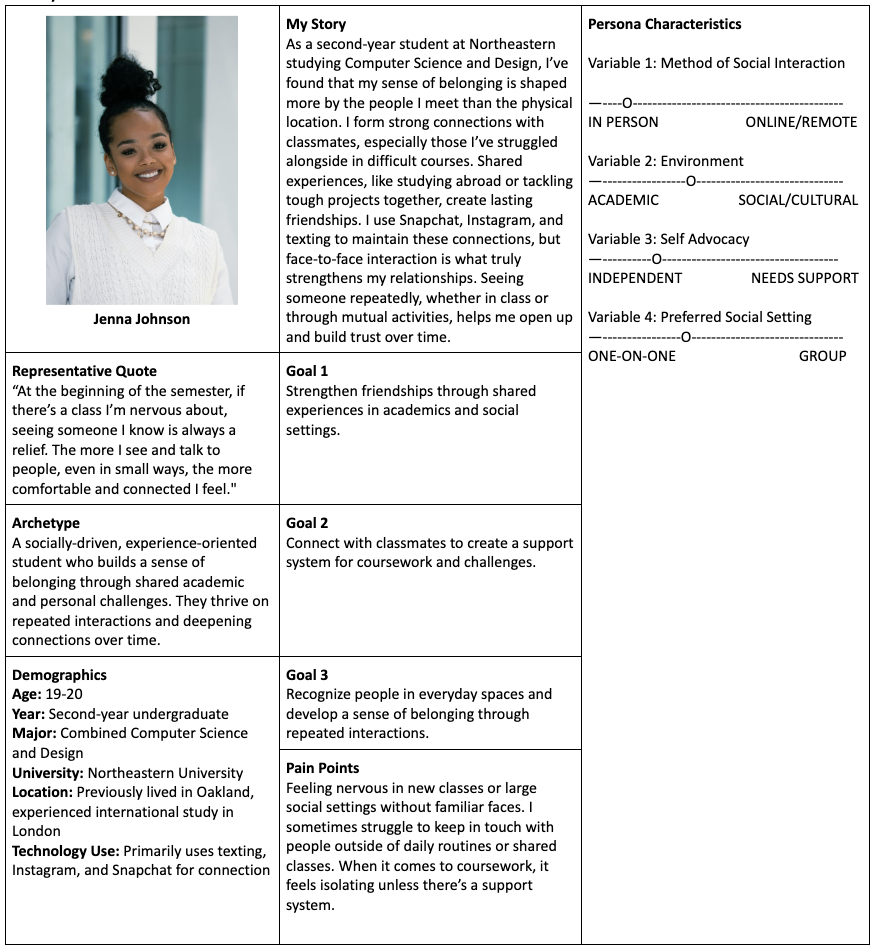

Project Overview
CourseConnect is a mobile application designed to foster a greater sense of belonging among students by helping them connect with peers in their classes. Through an iterative design process—beginning with background research and user interviews and evolving through ideation, paper prototypes, usability testing, wireframes, and both low- and high-fidelity prototypes—my team and I developed a solution that addresses the common challenge of turning classroom familiarity into real connections. Unlike platforms like Canvas or Piazza, CourseConnect is built specifically to support in-class social interaction. Students can join their Northeastern course sections, view classmate profiles, participate in class forums, create and join study groups, message others directly, and customize their profiles based on interests, major, and year. The app bridges the gap between simply recognizing someone in class and actually getting to know them—mitigating the initial awkwardness of reaching out, and turning academic spaces into opportunities for meaningful connection.
Interviews & Personas
To accurately address the goal of creating an application to promote belongingness among Northeastern students it was vital to gather qualitative research from current students. We interviewed two Northeastern students to further understand their current approach to belongingness and how they form connections with other students. Our interviewees gave us a better understanding of what Northeastern students approached finding a sense of belongingness on campus. Using the qualitative data, we collected during the interviews were able to create a user persona called Jenna Johnson.
Affinity Diagram
Prototype Evaluation
CourseConnect provides students a platform that allows them to interact with students in their classes with a personalized, community-driven interface. The following contains key features and user flows of the app. Link to Figma Prototype Our prototype begins with the log in flow, where users create their profile. Users can switch between each step if they want to edit their information before creating their account. Home Screen - Upon creating an account, the user is greeted with a home page, containing an overview of friend requests, recent activity, and recent class forum posts. The prototype illustrates an account that has already been populated with data. Courses Tab - Users can navigate to the courses tab, where they will find their courses. Users can add/delete courses using the edit button on the top right. The theme/color of each course can also be edited by pressing the pencil icon next to each course card. Course Pages - Each course has its own course page. Within each course page, there are four tabs: Forum, Chat, People, and Study Groups. These pages provide an organized space for student-student communication within specific courses.
Final Report
To read more about the project, please see the full write-up below. Highlighted sections were written by me, and the full write-up was a collaborative effort between myself and my teammates.